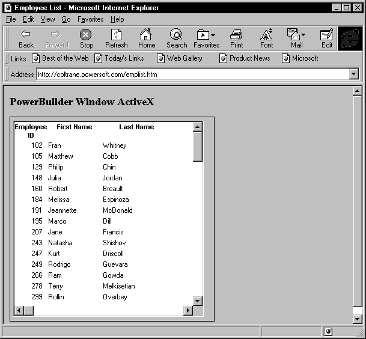

After creating and building the PowerBuilder PBDs for your PowerBuilder window ActiveX application, you need to create the HTML page that displays it.
To include a PowerBuilder window on a Web page, you use the Object element. Element attributes specify the class ID for the PowerBuilder window ActiveX, the space allocated for the window, the name of the PBD, the name of the child window in the PBD, the library list, and the version of PowerBuilder.
A sample Object element might be:
<OBJECT NAME="PBRX1" WIDTH=225 HEIGHT=83
CLASSID="CLSID:AAAA1304-A5A5-1000-8000-080009AC61A9">
<PARAM NAME="_Version" VALUE="65536"></PARAM>
<PARAM NAME="_ExtentX" VALUE="5962"></PARAM>
<PARAM NAME="_ExtentY" VALUE="2164"></PARAM>
<PARAM NAME="_StockProps" VALUE="0"></PARAM>
<PARAM NAME="PBWindow" VALUE="w_helloworld"></PARAM>
<PARAM NAME="LibList" VALUE="http://www.company.com/rknnt.pbd;"></PARAM>
<PARAM NAME="PBApplication" VALUE="hello"></PARAM>
<PARAM NAME="PBVersion" VALUE="100"></PARAM>
</OBJECT>
The Object element is part of the HTML specification for ActiveX controls. It defines several standard attributes, and PowerBuilder defines additional attributes.
HTML attributes specify the class ID, the name, and the space reserved for the PowerBuilder window ActiveX on the Web page.
The WIDTH and HEIGHT attributes define the maximum width and height of the child window. If the child window is resizable, the user can make it smaller than the specified size, but not larger.
To specify properties for the PowerBuilder window ActiveX, include Param elements. Param elements let you identify the window object that starts your application, the Application object, additional libraries, and additional parameters to pass to the PowerBuilder window ActiveX. Table 34-3 lists the PowerBuilder-specific Param elements.
 Coding the Object element To minimize coding errors, use an ActiveX-aware HTML editor
(such as the Web targets HTML editor, the ActiveX Control Pad, or
Front Page) when coding an Object element and its parameters.
Coding the Object element To minimize coding errors, use an ActiveX-aware HTML editor
(such as the Web targets HTML editor, the ActiveX Control Pad, or
Front Page) when coding an Object element and its parameters.
This sample page includes the PowerBuilder window ActiveX:

Here is the HTML code that produces this page (note the use of the Object element to specify the PowerBuilder window ActiveX):
<HTML>
<HEAD>
<TITLE>Employee List</TITLE>
</HEAD>
<BODY>
<H1>PowerBuilder window ActiveX</H1>
<P>
<OBJECT ID="PBRX1" NAME="PBRX1" WIDTH=357 HEIGHT=269
CLASSID="CLSID:AAAA1304-A5A5-1000-8000-080009AC61A9">
<PARAM NAME="_Version" VALUE="65536">
<PARAM NAME="_ExtentX" VALUE="9440">
<PARAM NAME="_ExtentY" VALUE="7112">
<PARAM NAME="_StockProps" VALUE="0">
<PARAM NAME="PBWindow" VALUE="w_emplist">
<PARAM NAME="LibList" VALUE="http://www.company.com/rknnt.pbd;">
<PARAM NAME="PBApplication" VALUE="rknnt">
<PARAM NAME="PBVersion" VALUE="105">
</OBJECT>
</BODY>
</HTML>
You can interact with the window displayed in a PowerBuilder window ActiveX by adding JavaScript or VBScript to the HTML page. You can:
 Viewing ActiveX properties, events, and functions When the window ActiveX is registered on your
machine, you can use the PowerBuilder Browser's OLE tab
to see the list of window ActiveX properties, events, and functions.
Viewing ActiveX properties, events, and functions When the window ActiveX is registered on your
machine, you can use the PowerBuilder Browser's OLE tab
to see the list of window ActiveX properties, events, and functions.
Your HTML page can contain JavaScript or VBScript event handlers for the PowerBuilder window ActiveX.
 Coding example assumptions The following code examples assume that the HTML page includes
a Form, named buttonForm, which contains several Input elements:
passedFlags, passedXPos, and passedYPos.
Coding example assumptions The following code examples assume that the HTML page includes
a Form, named buttonForm, which contains several Input elements:
passedFlags, passedXPos, and passedYPos.
 To code JavaScript event handlers for the PowerBuilder
window ActiveX:
To code JavaScript event handlers for the PowerBuilder
window ActiveX:
Insert the PowerBuilder window ActiveX into the HTML page, specifying all necessary properties:
<OBJECT NAME="PBRX1" WIDTH=225 HEIGHT=83
CLASSID="CLSID:AAAA1304-A5A5-1000-8000-080009AC61A9">
<PARAM NAME="_Version" VALUE="65536">
<PARAM NAME="_ExtentX" VALUE="5962">
<PARAM NAME="_ExtentY" VALUE="2164">
<PARAM NAME="_StockProps" VALUE="0">
<PARAM NAME="PBWindow" VALUE="w_helloworld">
<PARAM NAME="LibList" VALUE="http://www.company.com/rknnt.pbd;">
<PARAM NAME="PBApplication" VALUE="rknnt">
<PARAM NAME="PBVersion" VALUE="105">
</OBJECT>
Within the heading of the HTML page, code a function to be called when the event occurs.
The following sample function simply displays the arguments to the Clicked event.
function wasClicked(flags, xpos, ypos) {document.buttonForm.passedFlags.value = flags;
document.buttonForm.passedXPos.value = xpos;
document.buttonForm.passedYPos.value = ypos;
}
Within the body of the HTML page, code an event handler that calls the function when the event occurs:
<SCRIPT LANGUAGE="JavaScript" FOR="PBRX1" Event="Clicked(flags, xpos, ypos)">
<!--
wasClicked(flags, xpos, ypos);
-->
</SCRIPT>
 Coding style Alternatively, you can omit the function call, placing all
code within the event handler, as shown next.
Coding style Alternatively, you can omit the function call, placing all
code within the event handler, as shown next.
 To code VBScript event handlers for the PowerBuilder
window ActiveX:
To code VBScript event handlers for the PowerBuilder
window ActiveX:
Insert the PowerBuilder window ActiveX into the HTML page, specifying all necessary properties:
<OBJECT NAME="PBRX1" WIDTH=225 HEIGHT=83
CLASSID="CLSID:AAAA1304-A5A5-1000-8000-080009AC61A9">
<PARAM NAME="_Version" VALUE="65536">
<PARAM NAME="_ExtentX" VALUE="5962">
<PARAM NAME="_ExtentY" VALUE="2164">
<PARAM NAME="_StockProps" VALUE="0">
<PARAM NAME="PBWindow" VALUE="w_helloworld">
<PARAM NAME="LibList" VALUE="http://www.company.com/rknnt.pbd;">
<PARAM NAME="PBApplication" VALUE="rknnt">
<PARAM NAME="PBVersion" VALUE="105">
</OBJECT>
Within the body of the HTML page, code an event handler that processes the event.
This sample function simply displays the arguments to the Clicked event:
<SCRIPT LANGUAGE="VBScript">
<!--
Sub PBRX1_Clicked(flags, xpos, ypos)
document.buttonForm.passedFlags.value = flags
document.buttonForm.passedXPos.value = xpos
document.buttonForm.passedYPos.value = ypos
end sub
-->
</SCRIPT>
The PowerBuilder window ActiveX allows you to call certain PowerScript functions on the window displayed in the Active control:
For more information on these functions, see the PowerScript Reference.
As with all ActiveX controls, the PowerBuilder window ActiveX provides an AboutBox function, which you can call to see information about the control.
 Coding example assumptions The following coding examples assume that you have written
scripts to be invoked by the PowerBuilder window's Timer
event.
Coding example assumptions The following coding examples assume that you have written
scripts to be invoked by the PowerBuilder window's Timer
event.
 To use JavaScript to call a PowerScript function:
To use JavaScript to call a PowerScript function:
Code a function to call the PowerScript function.
This example calls the PowerScript Timer function:
<SCRIPT LANGUAGE="JavaScript">
<!--
var cumSeconds = 0;
function setPBTimer( f ) {var li_return
var li_interval
li_interval = parseInt(f.timerInterval.value);
li_return = PBRX1.Timer(li_interval);
if (li_return != 1) { alert("Set Timer failed");}
}
//-->
/SCRIPT
Code a function, anchor, or button that calls the function.
This example uses a button on a form to call the function defined above, which resets the timer interval:
<FORM NAME="clockForm">
<P>Timer Interval:
<INPUT TYPE=Text NAME="timerInterval" Size="5">
<P><INPUT TYPE=BUTTON VALUE="Set Timer"
ONCLICK="setPBTimer(this.form)">
</FORM>
 To use VBScript to call a PowerScript function:
To use VBScript to call a PowerScript function:
Code a function to call the PowerScript function. This example calls the PowerScript Timer function:
<SCRIPT LANGUAGE="VBScript">
<!--
dim cumSeconds
cumSeconds = 0
Sub pbSetTime()
dim li_return
dim li_interval
li_interval = clockForm.timerInterval.value
li_return = pbrx1.Timer(li_interval)
if li_return 1 THEN
msgBox "Set Timer failed"
end if
end sub
//-->
</SCRIPT>
Code a function, anchor, or button that calls the function.
This example uses a button on a form to call the function defined above, which resets the timer interval:
<FORM NAME="clockForm">
<P>Timer Interval:
<INPUT TYPE=Text NAME="timerInterval" Size="5">
<HR>
<P>Mirror of PB Time:
<INPUT TYPE=Text NAME="pbTime" Size="8">
<HR>
<P>INPUT TYPE=BUTTON VALUE="Set Timer" onClick="call pbSetTime()">
</FORM>
The PowerBuilder window ActiveX provides the InvokePBFunction function, which you can use to call a user-defined window function.
 VBScript and JavaScript differ If your user-defined functions contain arguments and you are
using JavaScript, you must use SetArgElement to specify the arguments;
you cannot specify the arguments explicitly in the InvokePBFunction function.
VBScript and JavaScript differ If your user-defined functions contain arguments and you are
using JavaScript, you must use SetArgElement to specify the arguments;
you cannot specify the arguments explicitly in the InvokePBFunction function.
 To code JavaScript that invokes a user-defined
function:
To code JavaScript that invokes a user-defined
function:
Define window functions as needed.
The following example assumes that in the PowerBuilder window, you have defined the function of_arg that takes a string as a parameter.
Code a JavaScript function that calls the InvokePBFunction function, specifying the user-defined function to invoke.
This example initializes arguments and calls the of_args window function:
function invokeFunc(f) {var retcd;
var rc;
var numargs;
var theFunc;
var theArg;
retcd = 0;
numargs = 1;
theArg = f.textToPB.value;
PBRX1.SetArgElement(1, theArg);
theFunc = "of_args";
retcd = PBRX1.InvokePBFunction(theFunc, numargs);
rc = parseInt(PBRX1.GetLastReturn());
if (rc != 1) { alert("Error. Empty string.");}
PBRX1.ResetArgElements();
}
Code a function, anchor, or form button that invokes your JavaScript function. For example:
<FORM>
<P>Copy this text to PowerBuilder:
<INPUT TYPE=Text NAME="textToPB" SIZE="20">
<P><INPUT TYPE=BUTTON VALUE="Invoke Func"
ONCLICK="invokeFunc(this.Form)">
</FORM>
 Defining arguments in JavaScript When coding in JavaScript, define function and event arguments
by calling the SetArgElement function.
Defining arguments in JavaScript When coding in JavaScript, define function and event arguments
by calling the SetArgElement function.
 To code VBScript that invokes a user-defined function:
To code VBScript that invokes a user-defined function:
Define window functions as needed.
The following example assumes that in the PowerBuilder window you have defined the function of_arg that takes a string as a parameter.
Code a VBScript function that calls the InvokePBFunction function, specifying the user-defined function to invoke.
This example initializes arguments and calls the of_args window function:
Sub invokeFunction()
Dim retcd
Dim myForm
Dim args(1)
Dim rc
Dim numargs
Dim theFunc
Dim rcfromfunc
retcd = 0
numargs = 1
rc = 0
theFunc = "of_args"
Set myForm = Document.buttonForm
args(0) = buttonForm.textToPB.value
retcd = PBRX1.InvokePBFunction(theFunc,
numargs, args)
rc = PBRX1.GetLastReturn()
if rc 1 then
msgbox "Error. Empty string."
end if
PBRX1.ResetArgElements()
end sub
Code a function, anchor, or form button whose click invokes your VBScript function. For example:
<FORM NAME="buttonForm">
<P><INPUT TYPE=Text NAME="textToPB" SIZE="20">
<P><INPUT TYPE=BUTTON VALUE="Invoke Function" ONCLICK="call invokeFunction()">
</FORM>
The PowerBuilder window ActiveX provides the TriggerPBEvent function, which you can use to call a user event on the window.
 To code JavaScript that triggers a user event:
To code JavaScript that triggers a user event:
Define user events on the window as needed.
The following example assumes that in the PowerBuilder window you have defined the user event ue_args that takes a string as an argument.
Code a function to call the user event. This example initializes arguments and calls the ue_args window event:
function triggerEvent(f) {var retcd;
var rc;
var numargs;
var theEvent;
var theArg;
retcd = 0;
numargs = 1;
theArg = f.textToPB.value;
PBRX1.SetArgElement(1, theArg);
theEvent = "ue_args";
retcd = PBRX1.TriggerPBEvent(theEvent, numargs);
rc = parseInt(PBRX1.GetLastReturn());
if (rc != 1) { alert("Error. Empty string.");}
PBRX1.ResetArgElements();
}
Code a function, anchor, or form button that calls the TriggerPBEvent function. For example:
<FORM>
<P><INPUT TYPE=Text NAME="textToPB" SIZE="20">
<P><INPUT TYPE=BUTTON VALUE="Trigger Event"
ONCLICK="triggerEvent(this.Form)">
</FORM>
 To code VBScript that triggers a user event:
To code VBScript that triggers a user event:
Define user events on the window, as needed.
The following example assumes that in the PowerBuilder window you have defined the user event ue_args that takes a string as an argument.
Code a function to call the user event. This example initializes arguments and calls the ue_args window function:
Sub TrigEvent( )
Dim retcd
Dim myForm
Dim args(1)
Dim rc
Dim numargs
Dim theEvent
retcd = 0
numargs = 1
rc = 0
theEvent = "ue_args"
Set myForm = Document.buttonForm
args(0) = buttonForm.textToPB.value
retcd = PBRX1.TriggerPBEvent(theEvent,
numargs, args)
rc = PBRX1.GetLastReturn()
if rc 1 then
msgbox "Error. Empty string."
end if
PBRX1.ResetArgElements()
end sub
Code a function, anchor, or form button whose click invokes your VBScript function. For example:
<FORM NAME="buttonForm">
<P><INPUT TYPE=Text NAME="textToPB" SIZE="20">
<P><INPUT TYPE=BUTTON VALUE="Trigger Event" ONCLICK="call TrigEvent()">
</FORM>